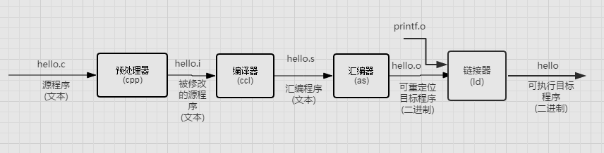
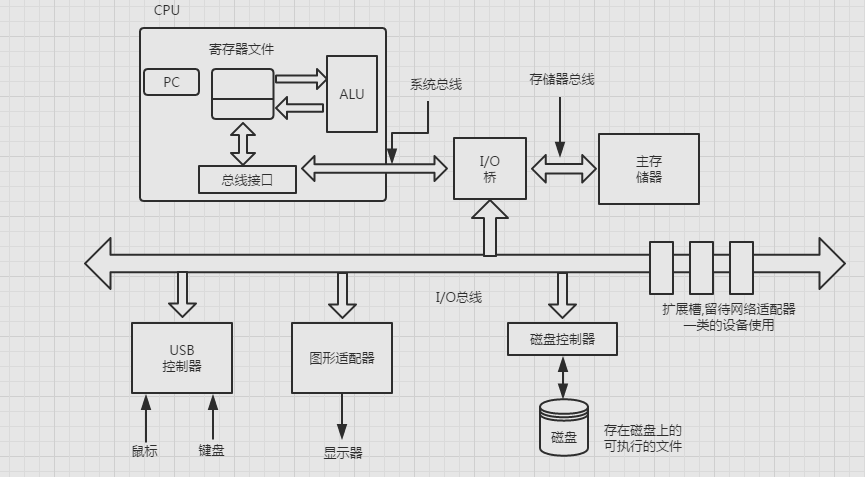
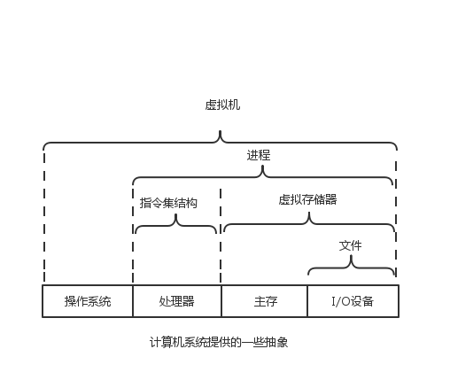

说在前面的一些废话，如果你困了，请直接跳至正文
刚入学就买的这本《深入理解计算机系统》。一年多来，学学停停，但是永远记住了第一章第二段的第二句话
如果你全力投身学习本书的概念，完全理解底层计算机系统以及它对应用程序的影响
那么你会走向为数不多的“大牛”的道路好一个大牛的道路，对于热爱计算机的人来说的“大牛的道路” 和 爱好钱财的人的“富婆包养路”（或者是富萝莉）地位相同
在这句话的驱动下（多少人和我一样啊），这本书是我花费最多时间和精力去啃的专业书籍
这本书确实无敌到能让一个完全不懂的孩童般见识到了计算机专业广阔无垠、波澜壮阔的海洋。
惭愧的是自己完全没有达到大牛们啃完后通彻计算机系统的境界
即便是如此我还是受益匪浅，CSAPP无愧为计算机专业的神书！
如今我已经大二，按理说是踌躇满志的时候，我却满是遗憾，遗憾自己大一后半学期的固步自封，
浪费了那么多宝贵的青春年华在毫无意义的事物上，追求短暂的愉悦却荒芜了年华。
但是往昔不可忆，切记不要再浪费自己的青春和元气。
所以重整旗鼓，这回想认真总结一下（感言结束，疯狂暗示♂）
一、分析hello.c的例子，从其生命周期分析系统的执行过程
hello.c 源代码：
#include<stdio.h>
int main()
{
printf("hello world");
return 0;
}
在Unix系统上,从源文件到目标文件的转化是由编译器驱动程序完成的:
unix>gcc -o hello hello.c
执行这四个阶段的程序(预处理器、编译器、汇编器、链接器)一起构成了编译系统(compilation system).
- 预处理阶段:也就是对程序进行预处理。C程序中特指“”#“”包含的库文件。预处理器将库文件直接导入到源代码中，
此例就是将头文件“stdio.h”导入到源程序中，生成hello.i源代码。 - 编译阶段:编译器(ccl)将文本文件hello.i翻译成文本文件hello.s,它包含一个汇编语言程序.
- 汇编阶段: 将汇编语言转化为机器指令,生成二进制文件——hello.o。
- 链接阶段.目标文件合并到我们的hello.o程序中,链接器就处理这种合并.得到hello文件,一个可执行目标文件,可以被加载到内存中,由系统执行.
二、信息就是位+上下文
源程序实际上就是由一个值0和1组成的位(bit)序列,8个位被组织成一组,称为字节.每个字节表示程序中某个文本字符.
大部分现代系统都是有ASCII标准表示文本字符,只由ASCII字符构成的文件称为文本文件,所有其他文件都称为二进制文件
系统中所有的信息—–包括磁盘文件、存储器中的程序、存储器中存放的用户数据以及网络上传送的数据,都是由一串位表示的.区分不同数据对象的唯一方法是我们读到这些数据对象时的上下文.比如:在不同的上下文中,一个同样的字节序列可能表示一个整数、浮点数、字符串或者机器指令.
三、系统的硬件组成

CPU:中央处理单元 ALU:算术/逻辑单元 PC:程序计数器 USB:通用串行总线
- 总线贯穿整个系统的是一组电子管道,称做总线,它携带信息字节并负责在各个部件间传递.
- I/O设备:输入/输出(I/O)设备是系统与外部世界的联系通道
- 主存:主存是一个临时存储设备,在处理器执行程序时,用来存放程序和程序处理的数据.
- 处理器:中央处理单元(CPU),简称处理器,是解释(或执行)存储在主存中指令的引擎.
处理器的核心是一个字长的存储设备(或寄存器),称为程序计数器(PC).
四、存储设备形成层次结构
存储器层次结构的主要思想是一层上的存储器作为低一层存储器的高速缓存.
五、线程进程，单独分离写了个博客，这里不重复
六、计算机系统中抽象的重要性
- 文件是对I/O的抽象
- 虚拟存储器是对程序存储器的抽象.
- 进程是对一个正在运行的程序的抽象.
- 虚拟机,它提供对整个计算机(操作系统,处理器和程序)的抽象.

七、虚拟内存
虚拟内存是一个抽象概念，它为每个进程提供了一个假象，即每个进程都在独占地使用主存。
每个进程看到的内存都是一致的，称为虚拟地址空间。在linux中，进程的虚拟地址空间如下图

程序代码和数据：对于所有进程来说，代码从一固定地址开始，紧接和C全局变量相对应的数据位置。第七章研究链接和加载时，学到更多有关地址空间的内容。
堆 ：代码和数据区紧随着运行时堆。代码和数据区是在进程一开始就被规定了大小，与此不同，调用malloc和free时堆动态的扩展和收缩。第9章学习管理虚拟存储器时，详细研究。
共享库：地址空间的中间部分存放C标准库和数学库这样共享库代码和数据的区域。共享库概念非常强大，相当难懂。第七章详解。
栈: 用户虚拟地址顶部的是用户栈，编译器用它来实现函数调用。和堆一样，在执行时动态的扩展和收缩。第三章详解。
内核虚拟内存。 内核总是驻留在内存中，是操作系统一部分。